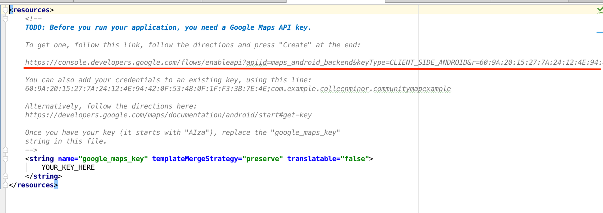

Now it's time to enable Google Maps in our app.
Google requires all apps to be registered with so that it can then send an authentication token back to our application. Once received, our application will be able to use this user token via callback functions. We'll go over that last.
In your 'Module: app' build.gradle file, add this line:
compile 'com.google.android.gms:play-services:8.4.0'
so that we can use google play services (which enables us to use google maps).
Then, from the navigation bar of your project, click file, mouse over 'new', mouse over Google, and select 'Google Maps activity.' Screenshot:
You can call it whatever you want, but here we'll just stick with the default name, "Maps Activity." Android Studio will generate a page that looks like this:
Notice the URL that I've underlined. You need to enter that into browser, log into your Google (gmail) account if you haven't already, and follow these steps:
We are now free to use Google Maps in our app.
If we go to MapsActivy.java file, we will see this:
As you can see, a map with a marker set to Sydney, Australia has been pre-generated. What we want is to set makers to the latitude and longitude values of our Parse.com SpecialMap objects. We'll do this in the next section.
Toggle Menu